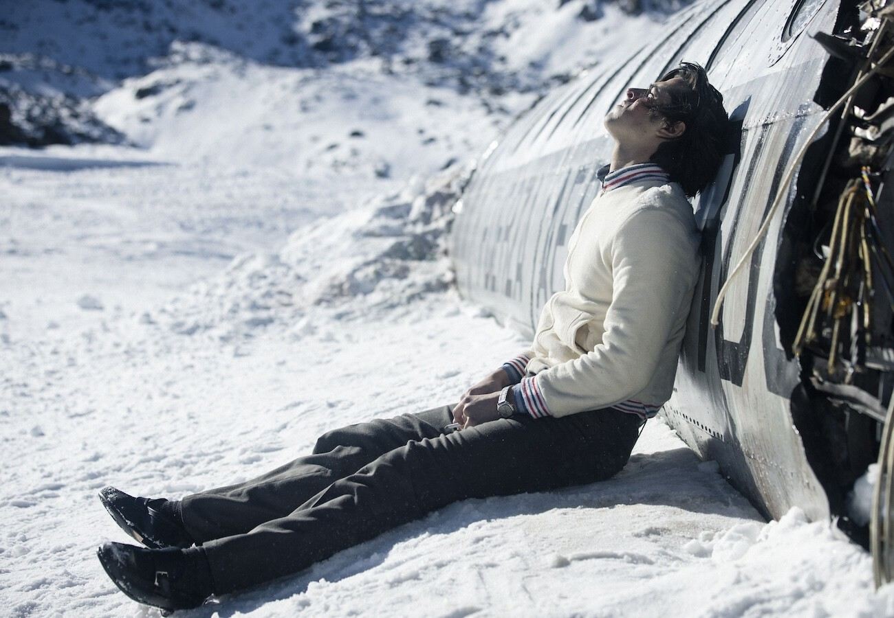
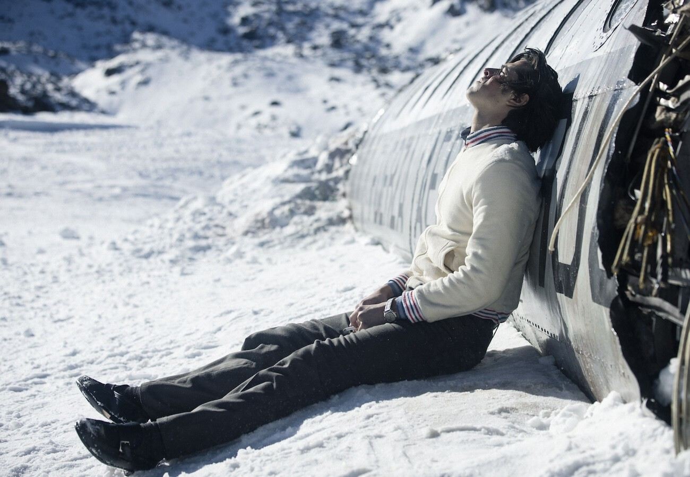

En octubre de 1972 en Montevideo Uruguay el equipo de rugby está en pleno juego Roberto canesa intentando ser el Héroe ignora los pedidos de sus compañeros de pasar el balón y termina siendo derribado por el equipo contrario tras el partido sus compañeros lo reprenden lanzándole ropa sucia hasta que Marcelo Pérez del Castillo El capitán calma a todos recordándoles que necesitan reunir dinero para su próximo partido en Sant Santiago de Chile para costear el vuelo empiezan a invitar amigos y conocidos Gastón costemalle durante una misa pasa una nota a Numa turcatti quien aunque no juega rugby es invitado a unirse al viaje Numa rechaza la invitación pero el equipo insiste ofreciéndole incluso una lista con teléfonos de chicas aún así Numa se niega Y entonces su amigo Pancho le menciona que quiere que sea su viaje de despedida antes de que la vida adulta lo separe.
De esa manera el avión que transportaba a un equipo de rugby y sus seguidores despega con 40 pasajeros y cinco tripulantes, llenos de risas y buen ánimo. A pesar de atravesar la cordillera de los Andes y enfrentar turbulencias, los pasajeros no se inquietan demasiado. El sargento Carlos Roque indica que los vuelos se desvían al sur para eludir los vientos que se generan entre el calor del campo argentino y el frío montañoso, creando un efecto de succión. Sin embargo, al aproximarse al aterrizaje, una ola de turbulencia agita el avión. El sargento Carlos Roque es lanzado contra el techo, y las turbulencias aumentan. En un intento desesperado por evitar una montaña que emerge de las nubes, el piloto intenta elevar el avión, pero es tarde. La cola del avión impacta contra la montaña, expulsando a los pasajeros de atrás, incluido Gastón. El resto del avión logra un aterrizaje forzoso en la nieve, deslizándose y desmantelándose hasta detenerse debido a la fuerza del impacto. Este impacto provoca que los pasajeros choquen y se comprimen, provocando fracturas y la muerte de los que están adelante.
Después del accidente, los sobrevivientes se encuentran en medio de la cordillera de los Andes, enfrentándose a condiciones extremas de frío y altitud. Numa, uno de los sobrevivientes, despierta entre gritos de angustia y socorro. Logra liberarse y ayuda a Roberto, Marcelo y Eduardo, quienes milagrosamente están ilesos. Roberto, un estudiante de Medicina, toma la iniciativa de ayudar a los heridos, reponiendo una pierna dislocada en medio de la conmoción. Este acto marca el inicio de la lucha por sobrevivir en la implacable cordillera.
El piloto del avión, aunque gravemente herido, logra sobrevivir. Marcelo intenta usar la radio para buscar ayuda, pero no funciona. En sus últimos momentos, el piloto entre susurros les desea que Dios los acompañe durante la primera noche. La temperatura cae a 30 grados, y los sobrevivientes usan maletas para bloquear la entrada y tratar de conservar algo de calor. Aunque el frío es implacable, se apilan como pueden, vivos y muertos mezclados, en un intento desesperado por mantenerse calientes.
Marcelo, el capitán, insta a todos a no dormirse para no congelarse, pero a pesar de sus esfuerzos, algunos no sobreviven la noche. Al amanecer, Numa y los demás exploran los alrededores, encontrándose completamente aislados entre la nieve y las rocas. Descubren que Nando y Susana están tumbas sin un sitio para atenderlos. Marcelo entonces adecuado manda acondicionar el interior del avión para los heridos, quitando asientos y escombros. Buscan comida en las maletas y acomodan a los fallecidos afuera, esperando el rescate.
La "sociedad de la nieve" es un término que surge de la necesidad de los sobrevivientes de organizarse y adaptarse a las duras condiciones de la cordillera de los Andes después del accidente del avión. Este término refleja la forma en que los sobrevivientes, aislados y enfrentando la muerte por congelación y hambre, se unen y se organizan para sobrevivir. En esta sociedad improvisada, cada sobreviviente tiene un papel específico que desempeñar, basado en sus habilidades, voluntad y condición física. Esta organización es clave para disminuir el caos y asegurar la supervivencia, ya que les permite maximizar sus escasos recursos y proporciona un fuerte sentido de propósito y comunidad bajo circunstancias extremadamente difíciles.
Los sobrevivientes inventan formas de fabricar agua y refugio, y logran convertir los restos del fuselaje en un refugio, que aunque miserable, es su única posesión en la montaña. Marcelo, el capitán, raciona la poca comida que encuentra, asignando una galleta y una aceituna por persona. La esperanza de ser rescatados se mantiene viva, pero la realidad de la situación es dura. La "sociedad de la nieve" también se ve marcada por la necesidad de adaptarse a nuevas normas sociales y éticas, como la consideración de consumir carne humana para sobrevivir. Esta adaptación refleja la capacidad de los seres humanos para reevaluar y cambiar sus normas y valores en respuesta a situaciones de extrema adversidad.
La supervivencia colectiva se convierte en el objetivo principal de los sobrevivientes, con la cooperación y la solidaridad como fundamentales para maximizar los recursos disponibles y minimizar el riesgo de congelación y hambre. La creación de una comunidad improvisada, basada en la necesidad mutua de sobrevivir, refleja la importancia de la solidaridad y el apoyo mutuo en situaciones de extrema adversidad. El liderazgo de Marcelo, el capitán, juega un papel crucial en la organización y supervivencia de la "sociedad de la nieve". Su capacidad para tomar decisiones difíciles y mantener la moral de los sobrevivientes es esencial para la supervivencia del grupo. Sin embargo, la situación extrema también pone a prueba el liderazgo, y algunos sobrevivientes, como Numa, se ven obligados a tomar decisiones difíciles por su cuenta.
El sacrificio y la supervivencia se manifiestan a través de la adaptación a nuevas realidades, la cooperación y la solidaridad, y la toma de decisiones difíciles para asegurar la supervivencia del grupo. Estos aspectos reflejan la capacidad de los seres humanos para encontrar formas de sobrevivir en circunstancias extremas, destacando la importancia de la resiliencia y la adaptabilidad.
Sin embargo, se menciona que las autoridades suspenden la búsqueda hasta el próximo año, esperando mejor visibilidad tras el deshielo. Esta decisión lleva a la desesperación entre los sobrevivientes, quienes se ven obligados a enfrentar la dura realidad de su situación
Luego de un lapso Nando y Roberto avanzan y tras varios días llegan a un área donde la nieve sede ante un desierto de rocas heladas más fácil de transitar Aunque sus tachones se deterioran logran repararlos beben del ron encontrado en la cola del avión y sealimentan con la carne de Numa pero por la noche Roberto se siente mal y vomita todo lo que había ingerido sin embargo al día siguiente su suerte mejora cuando descubren un río y beben agua pura algo que no hacían desde hace tiempo y en ese momento ven a un arriero y le piden ayuda el arriero les envía un papel con una piedra Nando y Roberto escribe en su situación y el papel llega a la fuerza aérea chilena que ajusta su búsqueda Gracias a la información el arriero llevan y Roberto a su casa donde finalmente pueden comer bien y de repente decenas de periodistas llegan para entrevistarlos Mientras tanto en el fuselaje la noticia de que Nando y Roberto han sido encontrados interrumpe el sueño de los supervivientes el grupo se arregla para verse bien cuando sean rescatados Fito y su primo decían enterrar los huesos de sus compañeros mientras Gustavo guarda pertenencias personales de los que dejaron atrás Roberto por su parte Ora a Dios el mundo entero se entera por la radio de los nombres de los 16 sobrevivientes Roberto Gustavo Eduardo Álvaro Fernando Antonio Pedro Alfredo Roy José Luis Ramón Javier Carlitos Roberto Daniel Adolfo Y entonces los helicópteros de rescate guiados por Nando llegan a donde están los demás quienes saltan y gritan de alegría Al subir al helicóptero Hay un problema con el peso y el copiloto ordena a Gustavo dejar la maleta con las pertenencias de los fallecidos pero este se niega a abandonarla y prefiere quedarse en la nieve finalmente el piloto le permite llevarla y despegan dejando atrás el fuselaje que había sido su hogar durante 70 días Numa como voz de todos los que no sobrevivieron y que fueron fundamentales narra que el 22 de diciembre los 16 sobrevivientes llegan a un campamento en el valle para reunirse con sus familias en el hospital son acogidos por una multitud como Héroes los médicos atienden sus cuerpos esqueléticos y quemados por el sol y tras meses toman su primer baño limpiándose de la sociedad acumulada los periódicos los llaman Héroes sin embargo Numa dice que no se sienten así explica que se preguntan por qué sobrevivieron solo ellos buscando un propósito sin embargo Numa como representante de los fallecidos los insta a ser ellos mismos el sentido a continuar apoyándose mutuamente y compartir con todos lo que hicieron en la montaña.
Las normas sociales en la sociedad de la nieve enfatizan la importancia de la cohesión y la organización. La cooperación y la asignación de tareas basadas en habilidades individuales, voluntad y condición física son fundamentales para maximizar los recursos escasos y asegurar la supervivencia. Esto subraya la idea de que la fuerza del equipo en su conjunto es más importante que las habilidades de unos pocos destacados.
Las normas sociales en la sociedad de la nieve también reflejan la capacidad de las personas para adaptarse a circunstancias extremas. Esto incluye la adaptación a la supervivencia en condiciones inhóspitas, la adaptación a la pérdida de seres queridos y la adaptación a la necesidad de tomar decisiones difíciles para la supervivencia, como el consumo de carne humana.
La historia muestra cómo los valores y tabúes sociales pueden cambiar en respuesta a desafíos extremos. Lo que inicialmente se considera inaceptable o aborrecible puede ser aceptado o incluso necesario para la supervivencia. Esto refleja la flexibilidad de las normas sociales y su capacidad para adaptarse a nuevas realidades.
El liderazgo y la toma de decisiones dentro de la sociedad de la nieve también están influenciados por las normas sociales. Los líderes emergen de entre los miembros del grupo y son aquellos que pueden comprender y manejar las nuevas dinámicas. Las decisiones importantes, como el consumo de carne humana, reflejan la importancia de las normas sociales en la toma de decisiones y la supervivencia del grupo.
La importancia del grupo en situaciones extremas, como la descrita en el accidente aéreo en la cordillera de los Andes, radica en su capacidad para trabajar juntos para enfrentar desafíos comunes y asegurar la supervivencia de todos. Reevaluar y cambiar normas y valores para adaptarse a nuevas circunstancias y encontrar soluciones innovadoras. Desempeñar roles de liderazgo y tomar decisiones efectivas para mantener la cohesión y la esperanza del grupo. Fomentar la solidaridad y el apoyo mutuo, asumiendo responsabilidad por la vida de los demás. Desarrollar un sentido de comunidad y propósito compartido que refuerce la cohesión y la esperanza de supervivencia. Adaptarse y desarrollar nuevas normas sociales que reflejen las necesidades y realidades de la situación de crisis.
La antropofagia en la "sociedad de la nieve", referida a los sobrevivientes del accidente aéreo en la cordillera de los Andes en 1972, es un tema delicado y controvertido. Aunque la historia real de los sobrevivientes está bien documentada y se ha convertido en un relato icónico de supervivencia y resistencia humana, la práctica de a ntropofagia, aunque mencionada en algunas fuentes, es un aspecto que ha sido objeto de debate y controversia. En el contexto del accidente aéreo, los sobrevivientes se enfrentaron a condiciones extremas de frío, hambre y aislamiento, lo que llevó a situaciones de desesperación y medidas, en algunos casos, a la consideración de extremas para sobrevivir. La antropofagia, aunque no fue la única opción considerada, se menciona como una de las estrategias de supervivencia que algunos miembros del grupo exploraron.
La historia de los sobrevivientes del accidente aéreo en la cordillera de los Andes es un testimonio de la capacidad del ser humano para resistir y superar condiciones extremas. Sin embargo, la mención de la antropofagia como una estrategia de supervivencia refleja la desesperación y la extrema necesidad que enfrentaron estos individuos. La antropofagia, en este contexto, se convierte en un símbolo de la lucha por la vida en condiciones de extrema adversidad, pero también es un recordatorio de los límites éticos y morales que deben respetarse incluso en situaciones de supervivencia extrema.
La resiliencia humana en la "sociedad de la nieve" se manifiesta en la capacidad de los sobrevivientes para adaptarse, cooperar, liderar, innovar, asumir responsabilidad y desarrollar nuevas normas sociales en respuesta a condiciones extremas. Este ejemplo ilustra la importancia de la resiliencia humana en la supervivencia y el bienestar en situaciones de adversidad.
En la sociedad de la nieve, la empatía y el cuidado mutuo fueron fundamentales para la supervivencia y el bienestar de los sobrevivientes. Estas cualidades no solo mejoraron la calidad de vida de los individuos, sino que también contribuyeron a la creación de un ambiente social saludable y armonioso. Al practicar la empatía y el cuidado mutuo, los sobrevivientes aprendieron a valorar y respetar a los demás, fomentando un sentido de comunidad y solidaridad que fue esencial para su supervivencia. La historia de la sociedad de la nieve es un testimonio poderoso de la capacidad humana para adaptarse y sobrevivir en las circunstancias más extremas, y destaca la importancia de la empatía y el cuidado mutuo en la construcción de una comunidad fuerte y unida.
‧ ୨୧ ‧ La organización y la cohesión dentro de la sociedad de la nieve fueron fundamentales para disminuir el caos y asegurar la supervivencia de los sobrevivientes. Esta organización les permitió maximizar sus recursos escasos y, quizás más importante, les proporcionó un fuerte sentido de propósito y comunidad en circunstancias extremadamente difíciles.
‧ ୨୧ ‧ Se observo un claro ejemplo del proceso de cómo emergen nuevas normas sociales dentro de un grupo o sociedad las normas sociales son reglas no escritas que emergen de la interacción entre los miembros de un grupo y que guían comportamientos actitudes y percepciones dentro de él estas normas son importantes porque hacen previsibles las acciones de los demás y así disminuyen la ambigüedad y facilitan el funcionamiento cohesivo del grupo cada sociedad crea su propio conjunto de normas basadas en valores y temas que considera relevantes Incluyendo los tabúes sociales que son prácticas vistas como inaceptables o aborrecibles sin embargo estas normas no son fijas cambian según con lo que el grupo considera importante y en la película estamos viendo precisamente có las normas sociales pueden adaptarse y cambiar cuando el grupo opta por la pofagia para sobrevivir Aunque es un tabú cultural la extrema situación les esfuerza reevaluar esta Norma que ya no se ajusta a las necesidades del grupo donde la supervivencia es su máxima prioridad y esto nos demuestra que en tiempos de crisis tanto individuos como grupos pueden superar las limitaciones de sus culturas convencionales y adoptar acciones antes impensables.
‧ ୨୧ ‧ Lo importante que es un verdadero grupo en el bienestar psicológico de los individuos todas las personas enfrentamos situaciones estresantes pero compartir las cargas en un grupo las hacen más llevaderas Gracias al apoyo emocional informativo o en tareas la idea de sobrevivir solo en Los Andes durante 70 días ante el frío el hambre y la desesperanza parece improbable pero en grupo se vuelve posible sin embargo no toda grupación de personas forma un grupo en el sentido estricto para que sea considerado un grupo es esencial un sentimiento de cohesión entre los miembros un lazo que los una fundamentado en la identificación con el grupo y en la compartición de valores actitudes y objetivos comunes en la película el grupo inicialmente mostraba cohesión ya que muchos eran amigos y compañeros de rugby pero esta cohesión se intensifica a medida que enfrentan la tragedia juntos y reconocen su interdependencia para sobrevivir y es este objetivo compartido el que sirve como el principal vínculo que los une promoviendo una fuerte identificación colectiva los miembros comienzan a identificarse más con el colectivo que como individuos adoptan una mentalidad de nosotros, en lugar de yo una mentalidad que como es sugerido se venía cultivando desde su práctica del rugby ellos mismos autodenominan la sociedad de la nieve y esa esta identificación colectiva la que en última instancia permite que los individuos estén dispuestos a hacer sacrificios por el bienestar del grupo.
‧ ୨୧ ‧ Una idea sugerida por Víctor Frank quien en medio de la desolación y sufrimiento sostuvo que el amor es la meta última y más alta a la que puede aspirar el ser humano Frank argumenta que la salvación del ser humano se encuentra en el amor y a través del amor incluso cuando todo lo demás ha sido arrebatado en la desolación más absoluta cuando la única meta parece ser soportar el dolor con dignidad el ser humano puede encontrar un propósito y realización en el amor profundo hacia otro ser.
Eduardo Strauch, uno de los sobrevivientes, reflexionó sobre su experiencia: "Estábamos muertos, pero seguíamos vivos. Cada vez más cohesionados y organizados, en lo que llamábamos la sociedad de la nieve. Cada uno de nosotros tenía un papel que desempeñar y todos éramos". responsables los unos de los otros. Inventamos formas de fabricar nuestra propia agua y refugio. Convirtimos los restos del fuselaje en un refugio, que aunque miserable, era nuestra única posesión en la montaña. Incluso empezaba a parecerse un poco a un hogar."
Marcelo se aleja discretamente de su rol según las memorias de 2016 del superviviente Pedro algorta Marcelo: "Había sido un líder eficaz en un contexto familiar dirigiendo al equipo contra otros equipos de rugby en entornos conocidos pero tras el accidente todo cambió el adversario ya no era otro equipo sino algo completamente nuevo y sin precedentes la montaña la nieve el hambre y el frío un escenario para el cual la experiencia previa de Marcelo y Su autoridad ya no eran aplicables". Esto retrata como las jerarquías existentes pueden perder su relevancia ante desafíos completamente nuevos y en estas circunstancias suelen destacarse como líderes aquellos individuos que logran comprender y manejar estas nuevas dinámicas siendo a menudo los más inesperados quienes emergen en estos roles
Coche Inciarte uno de los sobrevivientes describe este momento como un Renacer que inició una era de decisiones más inteligentes y el surgimiento de líderes que por su disposición a servir y por trabajar más y mejor guiaría al resto de los sobrevivientes dentro del fuselaje el herido Arturo nogeria que está postrado anima a Numa a conservar energía para sí Numa insta Arturo a no perder la fe a lo que él responde con una fe más fuerte que nunca no en Dios sino en la humanidad y solidaridad de sus compañeros.
 
